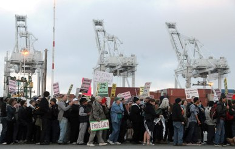

Submitted on Tue, 09/07/2010 - 3:18am
 The International Solidarity Commission of the Industrial Workers of the World is deeply concerned about current repression and detention of workers and activists in Bangladesh. At the current moment, we especially highlight the situation of Kalpona Akter of the Bangladesh Center for Worker Solidarity NGO (BCWS), and demand that she be released from detention, all charges against her be dropped, and that the NGO status of the BCWS be immediately reinstated.
The International Solidarity Commission of the Industrial Workers of the World is deeply concerned about current repression and detention of workers and activists in Bangladesh. At the current moment, we especially highlight the situation of Kalpona Akter of the Bangladesh Center for Worker Solidarity NGO (BCWS), and demand that she be released from detention, all charges against her be dropped, and that the NGO status of the BCWS be immediately reinstated.
Responding to the government?s cruel and insulting offer of merely $43 a month minimum wage, in the country with the lowest garment wages in the world, Bangladeshi workers took to the streets for five days. The workers were met with the full force of the Bangladeshi police and security forces, in the service of the bosses.
Submitted on Sun, 08/29/2010 - 12:03am
By: David Bacon, t r u t h o u t | Op-Ed, Friday 27 August 2010
Hashmeya Muhsin, head of the electrical workers union, talks with other union leaders at a meeting in Basra. (Photos by David Bacon)
Early in the morning of July 21, police stormed the offices of the Iraqi Electrical Utility Workers Union in Basra, the poverty-stricken capital of Iraq's oil-rich south. A shamefaced officer told Hashmeya Muhsin, the first woman to head a national union in Iraq, that they'd come to carry out the orders of Electricity Minister Hussain al-Shahristani to shut the union down. As more police arrived, they took the membership records, the files documenting often-atrocious working conditions, the leaflets for demonstrations protesting Basra's agonizing power outages, the computers and the phones. Finally, Muhsin and her coworkers were pushed out and the doors locked.
Shahristani's order prohibits all trade union activity in the plants operated by the ministry, closes union offices, and seizes control of union assets from bank accounts to furniture. The order says the ministry will determine what rights have been given to union officers, and take them all away. Anyone who protests, it says, will be arrested under Iraq's Anti-Terrorism Act of 2005.
So ended seven years in which workers in the region's power plants have fought for the right to organize a legal union, to bargain with the electrical ministry, and to stop the contracting-out and privatization schemes that have threatened their jobs.
Submitted on Fri, 07/23/2010 - 7:37am
Dear brothers and sisters,
This letter is to declare the strong support of the Industrial Workers of the World (IWW) and the Pittsburgh Anti Sweatshop Community Alliance (PASCA)for the National Garment Worker Federation's (NGWF) campaign to increase the minimum wage from 1,162 Tk. to 5,000 Tk. per month. We are also declaring our support of the campaign: "No More Fires - No More Gate Lock - No More Garment Worker Deaths.”
These campaigns are sorely needed in the garment industry in Bangladesh. In February of 2010, 21 workers died as a result of fire at a garment factory in Bangladesh. Many of these deaths were a direct result of the front gates of the factory being locked, trapping workers on the premises as the fire raged. Sadly this is not an isolated incident. Since 1990 more than 400 garment workers have been killed as a result of factory fires. These deaths could have been prevented if there were adequate fire and safety measures in every garment factory. Therefore we support the NGWF campaign to bring attention to these preventable deaths. In addition to raising awareness the NGWF is also advocating that new safety laws and regulations be put in to place across the country. If laws such as these are implemented we believe many lives will be saved.
Similarly, we strongly support our brothers and sisters in the NGWF as they demand that the minimum wage be increased from 1,162 Tk. (about 24 US dollars) to 5,000 Tk. (about 71 US dollars) by 27 July 2010. The current minimum wage is grossly inadequate for any person to survive in Bangladesh, especially in and around the capital city of Dhaka. Survival on these paltry wages has been particularly difficult as the price of food and essentials has rapidly increased over the last several years. As was pointed out by Brother Amirul Hoque Amin, Bangladesh’s garment workers are the lowest paid of the major garment producing nations.
Submitted on Tue, 06/29/2010 - 8:38pm
The International Solidarity Commission (ISC) of the Industrial Workers of the World (IWW), a global union dedicated to revolutionary social change and workers self-management, is shocked and appalled by Israeli forces’ attack this morning on the lead ship of a humanitarian aid convoy, the Turkish vessel “Mavi Marmaris”, killing at least ten people.
The ISC holds the Israeli authorities entirely responsible for the provocative storming of the ship, and condemns the harm caused to the civilians on board, who included peace activists and parliamentarians from many different countries.
The ISC supports any efforts to deliver humanitarian aid to the people of Gaza, who have been suffering the effects of the Israeli blockade since 2007, a suffering greatly intensified by the massacre of Dec 2008-Jan 2009. We salute the brave human rights activists attempting to deliver aid to the people of Gaza, including the crew and passengers on the MV Rachel Corrie, en route to Gaza.
Submitted on Sun, 06/20/2010 - 9:26pm
Note: This action was not called by the IWW, though some IWW members participated in the planning of the event and at least a dozen joined in the action. The organizers included the Transport Workers Solidarity Committee and ANSWER. This article was originally posted here.
In a historic action and unprecedented action today, over 800 labor and community activists blocked the gates of the Oakland docks in the early morning hours, prompting longshore workers to refuse to cross the picketlines where they were scheduled to unload an Israeli ship.